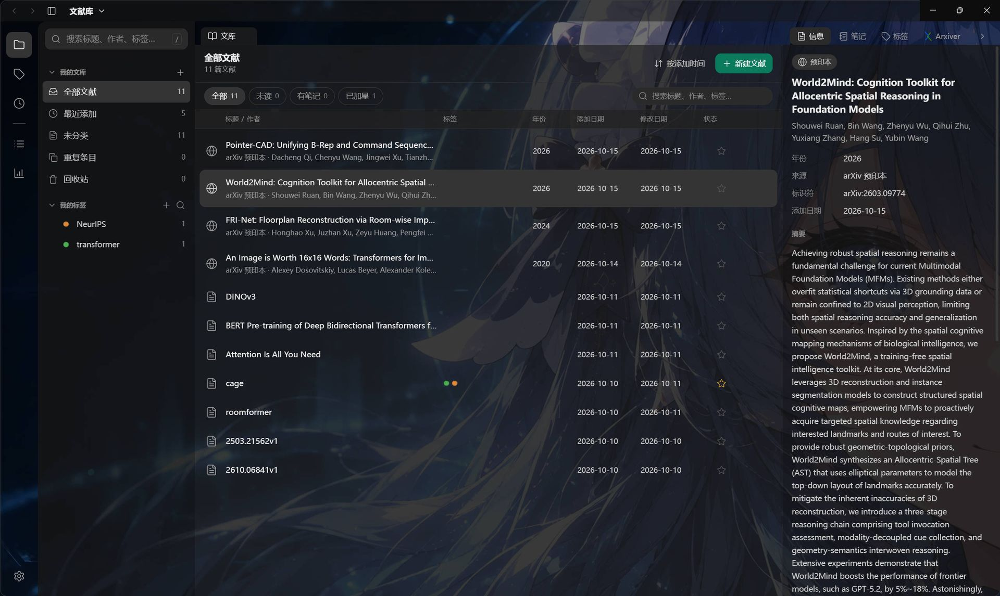
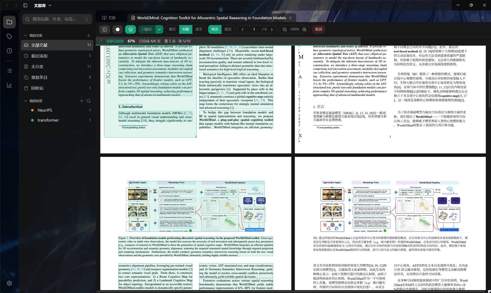
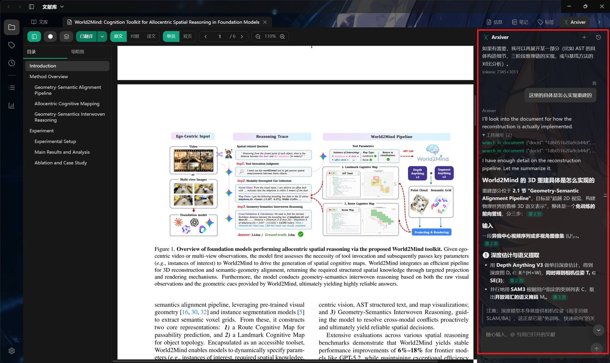
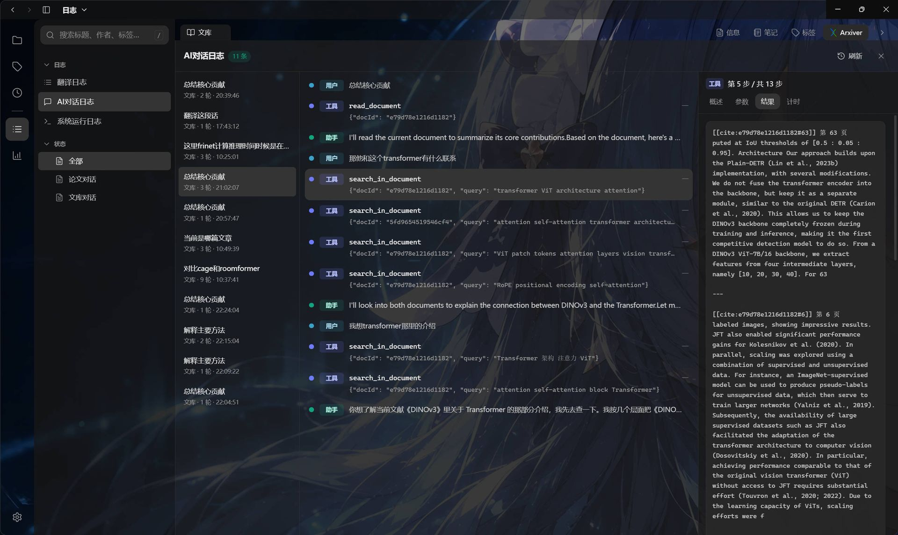
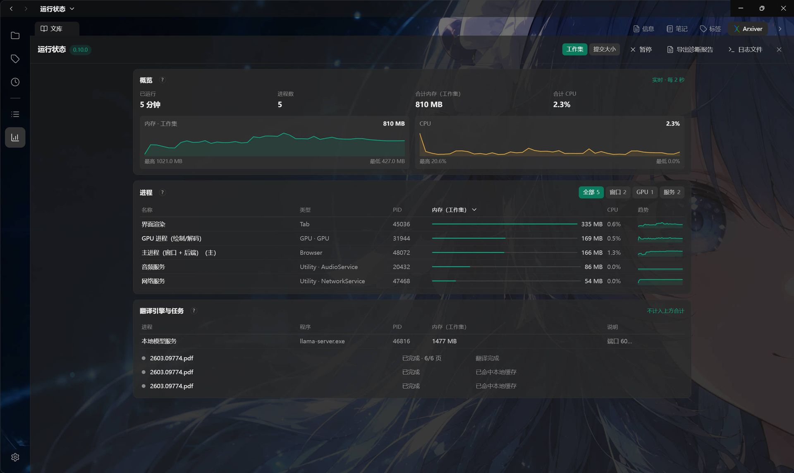
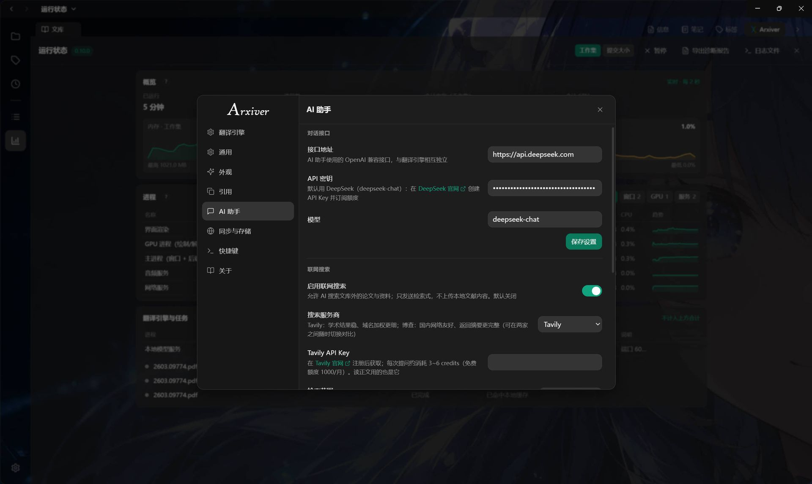

把英文论文，读成中文
导入本地 PDF 或 arXiv 链接。内置本地模型在本机完成翻译：约 10 页/分钟、边翻边看，论文不出本机；另有能跨文献问答的内置 AI 助手。

$ Arxiver
[engine] bundled · PyMuPDF + translate engine
[model ] DeepSeek (OpenAI-compatible)
[open ] 2211.15658v2.pdf en → zh-CN
[DONE] 15/15 pages ▸ bilingual ready
[engine] bundled · PyMuPDF + translate engine
[model ] DeepSeek (OpenAI-compatible)
[open ] 2211.15658v2.pdf en → zh-CN
[DONE] 15/15 pages ▸ bilingual ready
原文 / 对照 / 译文 三视图 · 块框 段落级溯源 · Arxiver 助手（引用跳转 / 跨文献）






Why Arxiver?
我们真正需要的是一个便携、好用、免费、不需要订阅的翻译工具，和一个能让 AI 趁手地帮我们读、理解、管理论文的地方——而不是一座要精心陈列的图书馆。科研缺的从来不是「摆得更整齐」，而是读得过来、读得明白。
| 能力 |

|
|
|---|---|---|
| 论文翻译 | 内置：默认本机模型离线完成——约 10 页/分钟、0 费用、边翻边看，论文不出本机；也可切换自定义在线大模型接口 | 无内置，需装第三方插件；多为在线服务（正文发往服务商、额度用完要订阅），通常要整篇翻完才能看 |
| AI Harness | 跨文献问答、联网检索与读正文、导入外部论文、改标签 / 分类（写操作先确认），长任务显示进度与已用时间 | 官方无内置；第三方 AI 插件零散，配置与体验参差 |
| 文献库与导入 | 分类层级、标签、笔记、回收站、全文检索；粘贴 arXiv 编号 / DOI / 链接即导入并自动补全元信息 | 元数据与检索更完整、浏览器连接器抓取 |
图例： 内置或强项 · 双方都有 · 需插件或部分支持 · 无。
浏览器扩展、与 Zotero 的双向同步、批注等能力 已在开发计划中。
下载
- Windows 安装包 — 双击向导安装，开箱即用。前往 Releases →
- 安装并启动 运行
Arxiver Setup vX.exe（内置翻译引擎与本地翻译模型）。 - 直接翻译 开箱即用：本地模型离线翻译，无需 API Key。
- 导入并翻译 导入本地 PDF 或 arXiv 链接，打开后点「翻译」，在阅读器里切换 原文 / 对照 / 译文。
- （可选）配置助手 需要对话式助手时，在「设置 → AI 助手」填入 OpenAI 兼容接口。
- 自动更新 — 内置差量更新，升级只下载变化的块；引擎与翻译模型没变就不会重下。
- 源码（开发者） — 克隆仓库后进入
electron-app/：npm install→npm run dev。查看仓库 →